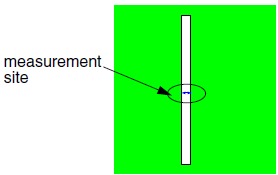

Version 10 Test Patterns
The extended test pattern includes a set of the basic structures with hammerheads. The following is a list of structures from the extended test pattern that are the minimum needed to produce a useful model:
Rows 1 - 7, 17 (line and space data)
Rows 8, 9, 11, 12 (line end data)
Rows 18 - 21 (contact data, more critical for metal than poly or diffusion)
Rows 23 - 26 (hammerhead data for line end correction)
The following test structure sets carry the most weight in the modeling process and should receive greatest attention:
pitch
iso
dense
doubleA more detailed explanation of the measurement data for each geometry is provided on the pages that follow.
iso
Row 1 Spreadsheet filename: iso The isolated line basic geometries range in width from slightly below the target CD up to above one micron wide. |
double
Row 2 Spreadsheet filename: double The linewidth of each line is equal and is also equal to the spacing between the lines. You can construct a linearity plot of achieved gap versus designed gap with these measurements. The ideal plot is perfectly linear. |
dense
Row 3 Spreadsheet filename: dense The dense lines basic geometry has equal linewidth and space width. The width ranges from just below the target CD up to above one micron wide. You can generate a dense lines linearity plot by plotting the achieved CD versus target CD. |
inv_iso
|  | Row 4 Spreadsheet filename: inv_iso The inverse isolated line is an inverse tone isolated line. Measure the linewidth. The test pattern contains a row of inverse isolated line geometry where the CD is increasing from left to right across the row. You can construct a linearity plot with this data. The ideal plot is linear. |
inv_double
Row 6 Spreadsheet filename: inv_double The inverse double line is an inverse tone double line. Measure the distance separating the two lines. The test pattern contains a row of double line geometries where the CD is increases from left to right across the row. You can construct a linearity plot with this data. The ideal plot is perfectly linear. |
line_end
Row 11 Spreadsheet filename: line_end The line end geometry characterizes line-end shortening. The minimum distance between the two abutting lines is measured. For a row of line ends with increasing separation distance between the lines, you can construct a plot of measured versus target gap. An ideal plot is linear. |
dense_line_end
Row 12 Spreadsheet filename: dense_line_end The dense line end geometry is similar to the line end geometry except for the addition of long lines on either side of the abutting lines. Measure the minimum distance between the two abutting lines. |
inv_line_end
Row 13 Spreadsheet filename: inv_line_end The inverse line end geometry characterizes 2D effects. |
T_junction
Row 14 Spreadsheet filename: T_junction The T junction contains a single long line in the center abutting to the center line. There are two lines that are separated by a given distance. |
triple_T
Row 16 Spreadsheet filename: triple_T The measurement location for the triple T junction is centered between the double vertical lines as shown. |
pitch
 |
Row 17 Spreadsheet filename: pitch The pitch lines geometry has a fixed linewidth but the space separating the lines is variable. |
contact
Row 18 (Row 1 of Contact Test Pattern) Spreadsheet filename: contact For the contact geometry measure the width of the contact. For a row of contacts with increasing width, you can construct a linearity plot. |
inverse_contact
Row 19 Spreadsheet filename: inv_contact The inverse contact geometry is a square opening in a large polygon. Measure the width of the opening. For a row of inverse contacts with increasing width of the hole, you can construct a linearity plot. The ideal plot is perfectly linear. |
dense_contact
Row 21 (Row 2 of Contact Test Pattern) Spreadsheet filename: dense_contact The dense contact geometry is an array of squares. You measure the width of the center contact. |